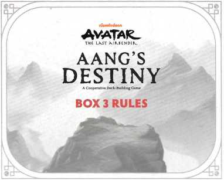
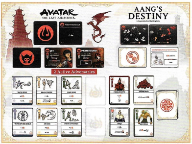
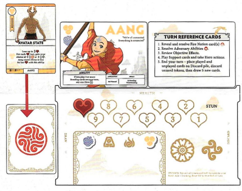

REGRAS DA CAIXA 3
OBJETIVO
Como nas Caixas anteriores, derrote todos os Adversários e complete todos os Objetivos antes que a Nação do Fogo chegue ao final do Caminho de Rastreamento.
COMPONENTES DA CAIXA 3
21 CARTAS DE APOIO (Geral, Ar, Água, Terra)
3 CARTAS DE RECOMPENSA
4 CARTAS DE HERÓI
4 CARTAS DA NAÇÃO DO FOGO
5 CARTAS DE ADVERSÁRIO
5 CARTAS DE OBJETIVO
CONFIGURAÇÃO DA CAIXA 3
Antes de configurar a Caixa 3, remova quaisquer cartas das Caixas anteriores que não sejam transferidas para a Caixa 3. Isso inclui: Haru, Tyro, Oyaji, Guia do Cânion, Princesa Yue, Tui e La, Espírito do Oceano, Tio Iroh, Piratas, Rastreador do Cânion, Jet, Arqueiros Yuyan e todas as cartas de Objetivo da Caixa 2.
Use o mesmo Caminho de Rastreamento das Caixas 1 e 2.
Siga a mesma configuração da Caixa 2.
Certifique-se de ter separado as cartas de Dobra das cartas de Apoio Gerais e colocado todas em suas pilhas apropriadas antes de embaralhar.
Lembre-se: NÃO EMBARALHE as cartas de Objetivo e Recompensa. Coloque a pilha no Tabuleiro de Jogo e revele o Objetivo 3.1 "NAVEGAR PELO TÚNEL SECRETO".
Para as cartas de Apoio, Adversários e Nação do Fogo, adicione as novas cartas da Caixa 3 às cartas restantes das Caixas 1 e 2 antes de embaralhar.
Ao revelar as cartas de Nação do Fogo, coloque 2 com a face para cima! Agora você deve lutar contra 2 Adversários por vez.
Durante o turno de um Herói, após resolver as cartas de Nação do Fogo, resolva as habilidades da esquerda para a direita.
Ao substituir um Adversário, deslize todos os Adversários ativos para a direita até que os espaços sejam preenchidos e revele o próximo do topo do baralho no espaço mais à esquerda.
Os efeitos acionados que são ativados após certos eventos (por exemplo, cada vez que Rastreamento é adicionado) ainda ocorrem cada vez que esse evento acontece, independentemente da ordem das cartas.

PREPARE SEU HERÓI
Substitua sua carta de Herói da Caixa 1 pela nova incluída nesta caixa. Seu treinamento aumentou suas habilidades e agora você tem uma habilidade especial para usar durante todo o jogo. Cada Herói tem uma habilidade única e somente eles podem ativá-la em seu turno.
A configuração do Herói é a mesma das Caixas 1 e 2. Escolha um Herói e pegue o baralho daquele Herói de 10 cartas Iniciais junto com quaisquer cartas de Recompensa da Caixa 1 e da Caixa 2 que também sejam cartas Iniciais para seu Herói, conforme listado abaixo.
Aang - 10 cartas Iniciais Originais mais Estado Avatar
Sokka - 10 cartas Iniciais Originais mais Suki e Espírito da Lua Yue
Katara - 10 cartas Iniciais Originais mais Pergaminho de Dobra de Água e Haru
Appa - 10 cartas Iniciais Originais mais Momo
Você NÃO começa o jogo com nenhuma das outras cartas de Apoio que você adquiriu ao jogar a Caixa 2. Essas cartas devem ter sido devolvidas aos seus baralhos de suprimentos e embaralhadas durante a configuração.
Como nas primeiras 2 Caixas, embaralhe e empilhe suas cartas de Herói Inicial com a face para baixo e, em seguida, compre 5 cartas.
Além das mudanças observadas acima, a Jogabilidade e as Condições de Fim de Jogo são as mesmas das Caixas 1 e 2.
PRÍNCIPE ZUKO (nome da carta)
2 Adversários Ativos
CARTAS DE REFERÊNCIA DE TURNO
Revele e resolva a(s) carta(s) da Nação do Fogo
Resolva as Habilidades do Adversário
Revise os Efeitos do Objetivo.
Jogue cartas de Apoio e tome ações de Herói
Fim do seu turno - coloque as cartas jogadas e não jogadas na pilha de Descarte, descarte os marcadores não utilizados e, em seguida, compre 5 novas cartas.

EXEMPLO
Aang - 10 cartas Iniciais Originais mais Estado Avatar.
Fontes e conteúdo relacionado